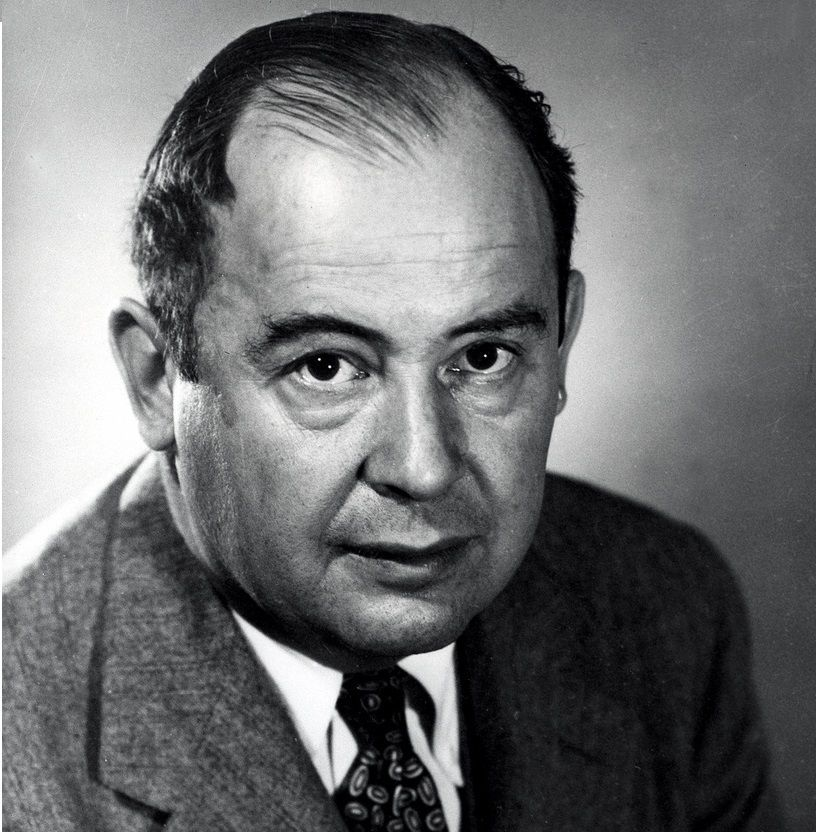

// Biografía
Coetáneo de Alan Turing y también uno de los genios que Estados Unidos reclutó para la Segunda Guerra Mundial. Este matemático húngaro fue alumno de Albert Einstein y ambos terminaron como profesores en la Universidad de Princeton, huyendo de la barbarie del régimen nazi.
Aunque Neumann formara parte del equipo que desarrolló la bomba atómica, su nombre ha quedado ligado a uno de los mayores avances en la historia de la computación. Durante los años 40 se cruzó con Herman Goldstine, uno de los principales responsables del desarrollo del ENIAC — Electronic Numerical Integrator And Computer —, una de las primeras computadoras de propósito general, inicialmente diseñada para calcular tablas de tiro de artillería.

Su verdadero nombre es János Neumann. De pequeño lo llamaban Jancsi; más tarde fue llamado "Johnny" en los Estados Unidos. Su padre, Max Neumann, era un rico banquero. Fue un niño prodigio que a los 6 años podía dividir mentalmente cifras de 8 dígitos.
// Vida y Estudios
John von Neumann nació el 28 de diciembre de 1903 en Budapest, Hungría, y murió el 8 de febrero de 1957 en Washington D.C. Creció en una extensa familia donde aprendió húngaro, alemán y francés. En 1911 entró en el Lutheran Gymnasium, donde su profesor de matemáticas pronto reconoció su talento especial.

Su primera publicación matemática, escrita conjuntamente con Fekete, fue publicada en 1922. Von Neumann recibió su diploma en ingeniería química de la Technische Hochschule en Zürich en 1926, y ese mismo año obtuvo su doctorado en matemáticas de la Universidad de Budapest con una famosa tesis sobre teoría de conjuntos. Publicó una definición de número ordinal a los 20 años, definición que todavía se usa.
// Segunda Guerra Mundial y Proyecto Manhattan (1939–1945)
Al estallar la Segunda Guerra Mundial, el gobierno estadounidense puso en marcha el famoso Proyecto Manhattan, al que Von Neumann se unió en 1943. Su aportación más importante radicó en el diseño del método de implosión, utilizado en Alamogordo — la primera detonación de una bomba atómica de la historia — y que luego volvería a usarse en la de Nagasaki.
Leslie Groves, la máxima autoridad militar del Proyecto Manhattan, lo eligió como uno de los miembros del comité de decisiones estratégicas. Se mostró a favor de construir la bomba de hidrógeno y los misiles balísticos intercontinentales capaces de ser lanzados sobre la Unión Soviética. La primera explosión de una bomba H se produjo en un atolón del océano Pacífico en 1952.
Von Neumann se atrevió a defender en público la inocencia y lealtad de Oppenheimer durante la persecución macartista. En enero de 1955 fue ratificado por el Senado de los Estados Unidos como comisario de la Comisión de Energía Atómica. En 1956 recibió de manos del presidente Eisenhower la primera medalla Fermi.
// La Primera Computadora
La Z1 fue una computadora electro-mecánica diseñada por Konrad Zuse entre 1936 y 1938. Era una calculadora binaria de accionamiento eléctrico, con programación limitada que leía instrucciones de una película de celuloide perforada. Fue la primera computadora libremente programable que usó lógica booleana y números de punto flotante binarios.
Fue completamente destruida en el bombardeo de Berlín en diciembre de 1943, junto con todos sus planos. Su nombre original fue "V1" (VersuchsModell 1); tras la guerra pasó a llamarse "Z1" para diferenciarse de las bombas volantes diseñadas por Robert Lusser.